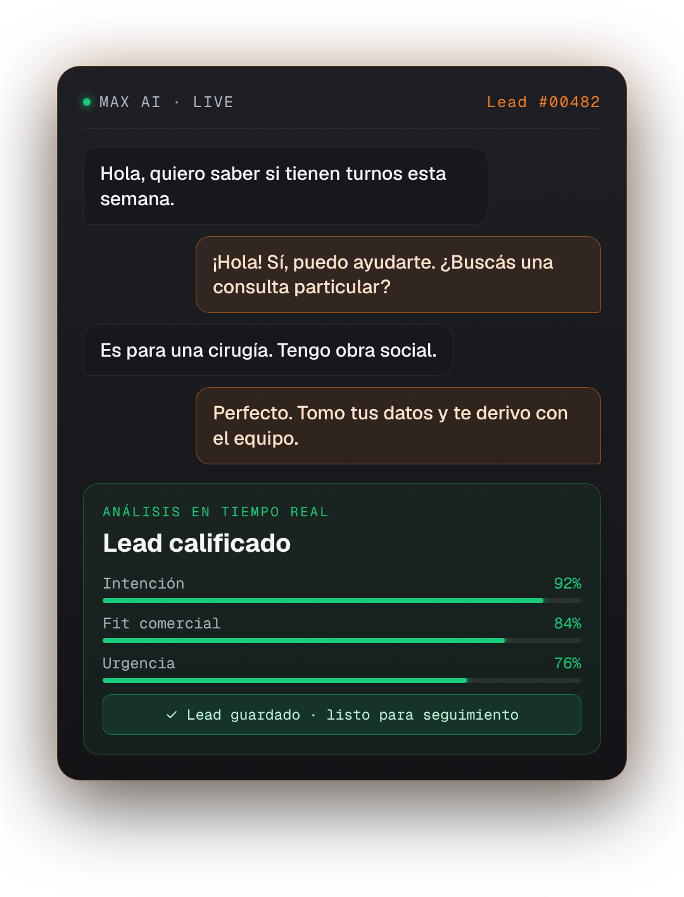
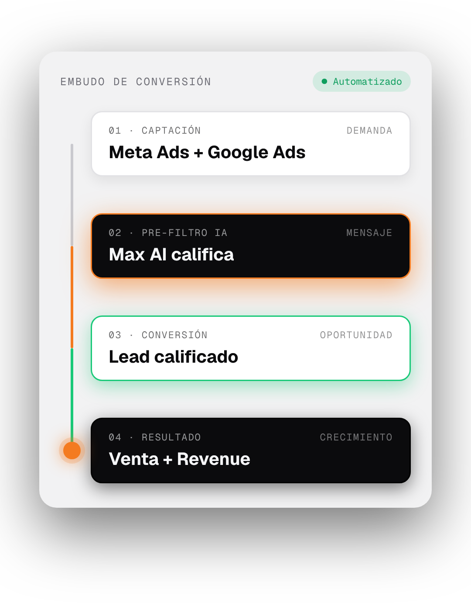

MÁS ANUNCIOS.
MÁS LEADS.
¿MÁS
VENTAS?
LEAD · DUPLICADO
Nuevo lead
FORMULARIO
Sin asignar
LEAD #00517SIN RESPONDER
Consulta desde Meta Ads
¿Siguen teniendo disponibilidad?
EL PROBLEMA
NO TERMINA
EN EL CLIC.
MC
GROWTH
SYSTEM
SYSTEM
RESPONDER.
CALIFICAR.
ORGANIZAR Y SEGUIR.
CONVERTIR MEJOR.


01
ADS
04
CRM
05
AUTOMATIZ.
Convertimos inversión
en crecimiento.
MARKETING + IA + SISTEMAS COMERCIALES
Solicitar diagnóstico↗
growth.mcmarketingdig.com